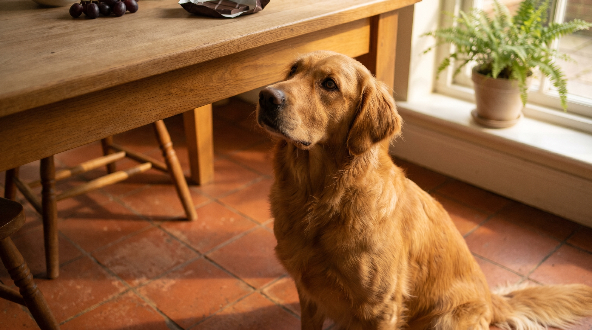

Половина отравлений домашних животных происходит от еды с хозяйского стола. Не потому что хозяин хотел навредить — просто не знал, что обычная конфета или кусочек лука может отправить собаку в реанимацию. Разбираем 8 продуктов, которые в организме собаки работают как яд, объясняем механизм и показываем, что делать, если уже съела.
У собак другой набор ферментов печени, другая скорость метаболизма и другая чувствительность рецепторов. То, что человеческая печень переработает без проблем, в организме собаки создаёт каскад токсических реакций. Ряд соединений — например, теобромин в шоколаде или тартариновая кислота в винограде — не выводится с нужной скоростью и накапливается до летальной концентрации.
По данным ASPCA Animal Poison Control Center, продукты питания входят в пятёрку самых частых причин экстренных обращений. В 2022 году центр зафиксировал более 401 000 обращений по поводу отравлений домашних животных — и пищевые токсины стабильно занимают в этом списке значительную долю.
Механизм токсичности: теобромин и кофеин — метилксантины, которые собаки выводят в 4-5 раз медленнее людей. Особенно опасен тёмный шоколад и какао: в нём концентрация теобромина в 5-10 раз выше, чем в молочном.
Токсическая доза: 20 мг теобромина на кг массы тела вызывают симптомы, от 100 мг/кг — судороги, свыше 200 мг/кг — смертельно. Для собаки весом 10 кг это примерно 50 г тёмного шоколада до первых симптомов.
Симптомы отравления: рвота, диарея, учащённое мочеиспускание, мышечная дрожь, тахикардия, судороги. Начало — через 6-12 часов после употребления.
Что делать: если прошло менее 2 часов — срочно к ветеринару, возможна индукция рвоты. Если прошло больше — ветеринар, капельница, симптоматическое лечение.
Один из самых коварных пунктов: токсин до конца не идентифицирован. До 2021 года причина была неизвестна. Исследование 2021 года (ASPCA/Journal of Veterinary Emergency and Critical Care) указало на тартариновую кислоту как вероятный агент. Проблема в том, что реакция непредсказуема: одна собака съела килограмм и перенесла нормально, другая умерла от нескольких ягод. Ни один ветеринар не может заранее сказать, насколько чувствителен конкретный пёс.
Последствие: острая почечная недостаточность, которая развивается в течение 24-72 часов. Без лечения — смерть.
Симптомы: рвота и диарея в первые 24 часа, затем вялость, потеря аппетита, боль в животе, анурия (отсутствие мочи).
Что делать: немедленно к ветеринару. Не ждать симптомов — к моменту их появления почки уже повреждены.
Всё семейство Allium токсично для собак. Причина: соединения дисульфида разрушают мембраны эритроцитов, что приводит к гемолитической анемии. Кошки чувствительнее к луку, чем собаки, но для обоих видов опасность реальная.
Особенность: токсичность накопительная. Разовое употребление небольшого количества может не дать симптомов, но регулярные маленькие дозы — например, если добавляете в корм «для вкуса» — накапливаются и приводят к анемии спустя недели.
Симптомы: слабость, бледные дёсны, учащённое дыхание, моча красно-коричневого цвета, вялость.
Опасная доза: по данным Merck Veterinary Manual, 0,5% от массы тела собаки (т.е. 25 г лука на 5-килограммовую собаку) уже вызывают признаки гемолиза.
Ксилитол — натуральный подсластитель, который используют в жевательных резинках, зубной пасте, жевательных витаминах, диетическом арахисовом масле и некоторых выпечных изделиях. Для людей он безопасен. Для собак — один из наиболее токсичных продуктов из всех существующих.
Механизм: у собак ксилитол вызывает резкий выброс инсулина, не связанный с реальным уровнем глюкозы. Это приводит к гипогликемии (падению сахара в крови) в течение 10-60 минут. В высоких дозах — к острой печёночной недостаточности через 9-72 часа.
Токсическая доза: 0,1 г/кг вызывает гипогликемию. 0,5 г/кг — повреждение печени. В одной пачке жвачки (10 пластинок) может содержаться доза, опасная для собаки весом 10 кг.
Симптомы гипогликемии: рвота, слабость, дрожь, нарушение координации, судороги, потеря сознания.
Что делать: немедленно к ветеринару — счёт идёт на минуты.
Токсин — персин, содержится в мякоти, кожуре, листьях и косточке авокадо. Особенно опасен для птиц и грызунов. У собак и кошек — умеренная токсичность: вызывает рвоту, диарею, миокардит (воспаление сердечной мышцы) при регулярном употреблении.
Дополнительная опасность: косточка авокадо — угроза удушья и кишечной непроходимости из-за своего размера.
Степень риска для собак ниже, чем для кошек и птиц, но регулярно давать мякоть авокадо собаке не стоит. Гуакамоле с луком и чесноком — двойная опасность.
Орехи макадамия вызывают у собак специфический синдром, механизм которого до конца не изучен. Симптомы появляются в течение 12 часов: слабость задних лап, дрожь, гипертермия (повышение температуры), рвота. Большинство собак восстанавливаются за 24-48 часов при поддерживающей терапии, но тяжёлые случаи требуют госпитализации.
Токсическая доза: по данным ASPCA, уже 2,4 г орехов на кг массы тела вызывают симптомы.
Этанол токсичен для собак в дозах, несопоставимо меньших, чем для человека. Собака весом 10 кг может получить опасное отравление от 30-40 мл пива. Помимо привычных продуктов с алкоголем, опасность представляют: дрожжевое тесто (образует этанол при брожении в желудке), некоторые ферментированные продукты, флакончики с духами и спиртосодержащие бытовые средства.
Симптомы: рвота, дезориентация, нарушение дыхания, гипотермия, кома.
Два механизма вреда одновременно. Первый — дрожжи в тёплом желудке продолжают бродить и производят этанол (алкогольное отравление). Второй — тесто расширяется и может вызвать вздутие желудка вплоть до заворота, что является хирургической экстренной ситуацией у собак. Завороть желудка без операции — смерть в течение нескольких часов.
Для тех, кто хочет угостить собаку с общего стола, но безопасно. Хорошо переносятся: варёная говядина и курица без специй, морковь, огурец, брокколи (в небольших количествах), яблоко без семечек, черника. Избегайте любых специй, соусов и маринадов — почти в каждом есть лук, чеснок или ксилитол.